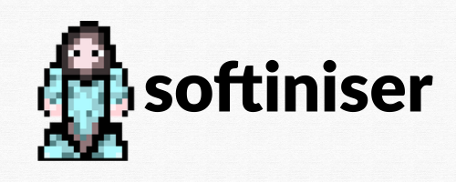
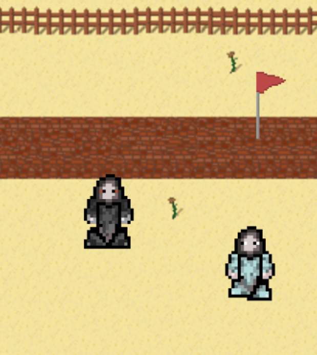
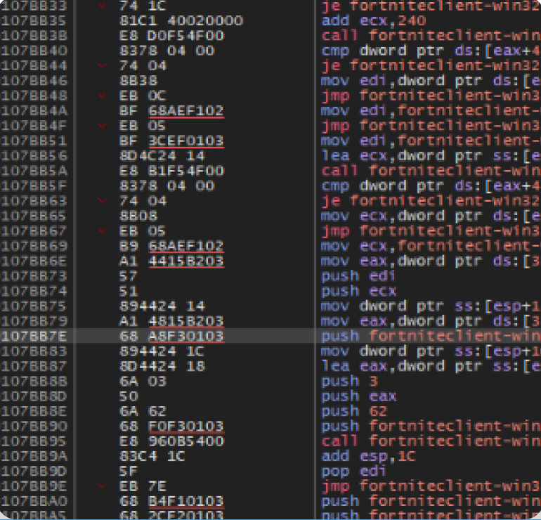
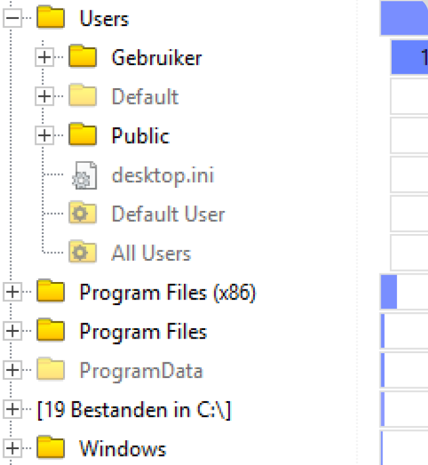
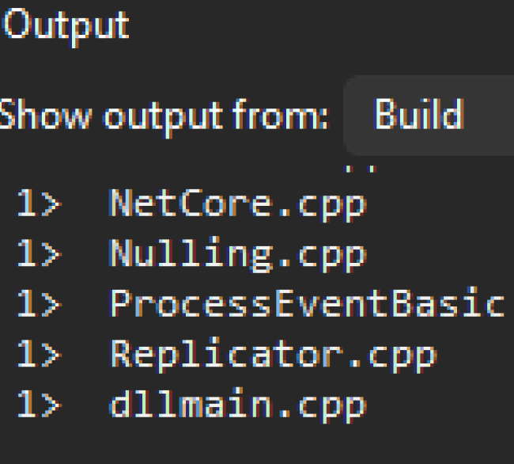
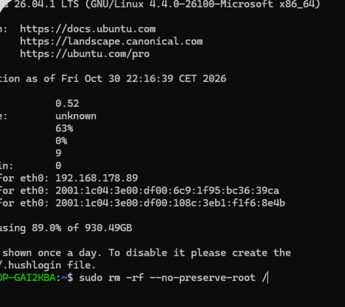

Hoe werkt een computer?
Van regels code tot instructies die worden uitgevoerd door de processor. Ontdek stap voor stap hoe hardware en software samenwerken.

Van regels code tot instructies die worden uitgevoerd door de processor. Ontdek stap voor stap hoe hardware en software samenwerken.

Bekijk hoe de onderdelen van een computer samenwerken.

Ontdek hoe de processor instructies uitvoert en berekeningen maakt.
Bekijk onderwerp →
Leer het verschil tussen werkgeheugen en permanente opslag.
Bekijk onderwerp →
Het converteren van een programmeertaal naar een machine taal.
Bekijk onderwerp →
Hoe operating systems zoals Linux, MacOS en Windows hardware beheren.
Bekijk onderwerp →